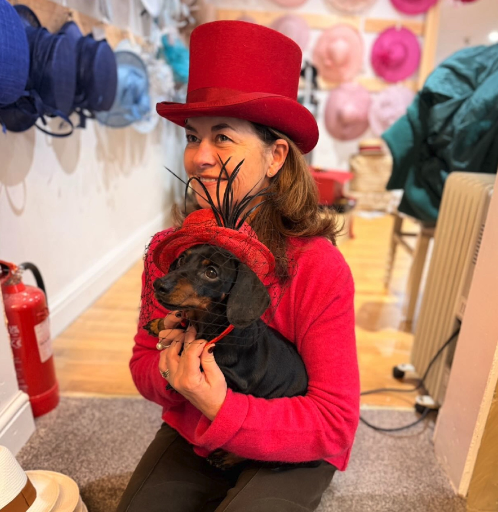
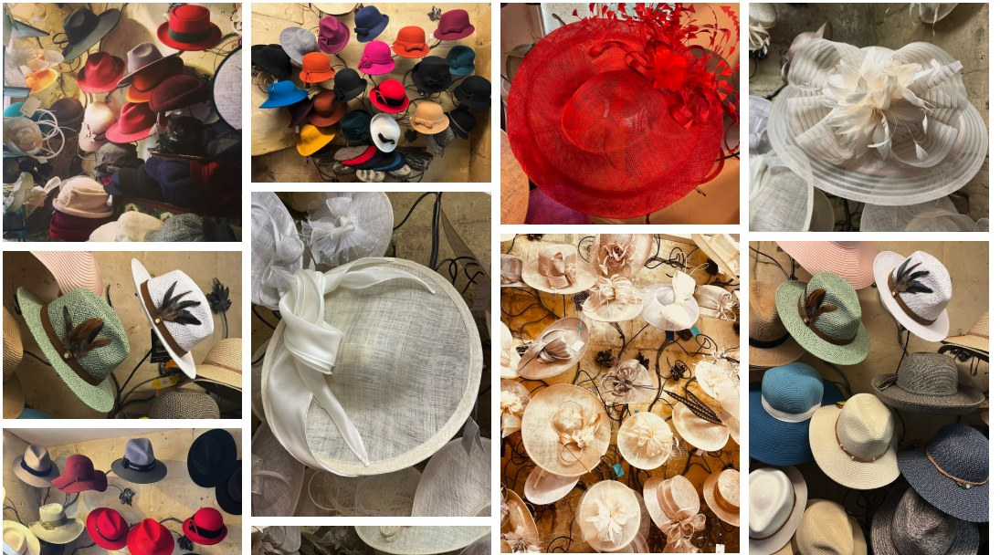

A Little Character Comes With Every Hat
Three decades of hats, fittings and friendly faces on one of Bath's most characterful streets.
Three decades on Walcot Street
For over thirty years, The Bath Hat Company has been dressing heads on one of Bath's most characterful streets. What began as a small collection of occasion hats has grown into a much-loved local landmark — visited by Bath residents, race-goers, wedding parties and curious travellers alike.
We've never set out to be the biggest shop in Bath — just the one where you leave with exactly the right hat, fitted properly, by someone who genuinely cares whether you love it.


No hard sell — just honest advice
Our customers tell us the same thing again and again: there's no pressure here, just patience. We'll happily let you try on hat after hat until you find the one — whether that takes two minutes or twenty.
Every hat that leaves our shop has been personally fitted, and if it needs a little easing or a small adjustment, we'll take care of that for you in store, by hand.
The values behind every fitting
Personal Fittings
Every visit is one-to-one. We take the time to understand what you need the hat for, and who you are.
Real Craftsmanship
Shaping, easing and finishing are done by hand, in store, using traditional millinery techniques.
A Warm Welcome
Bring your dog, bring your questions, bring your indecision — you'll always leave smiling.
Fashions fade, style is eternal.
Yves Saint Laurent
Find us in the heart of Bath
We're a short stroll from the Roman Baths, the Royal Crescent and Bath Abbey, on characterful Walcot Street. Whether you're planning an outfit for a big occasion or simply love a beautiful hat, we'd be delighted to welcome you.
Open Monday to Saturday, 10:30am–3:30pm.
Let us help you find your hat
9–11 Walcot Street, Bath. Open Monday to Saturday, 10:30am–3:30pm.